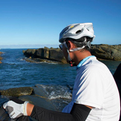

education
from Taiwan to the States
clinical medicine • pathology
data science • biomedical informatics
postdoctoral master student in biomedical informatics training program
previous medical doctor
 I am Wei-Hung Weng. I am currently a graduate student in biomedical informatics training program of Harvard Medical School (HMS).
I earned my M.D. degree at Chang Gung University (CGU), worked as primary care physician and pathologist and engaged in the field of biomedical image analysis as an R&D officer in National Taiwan University (NTU). With more than 3 years of research experience, I have contributed to several papers on journals and conferences concerning the fields of molecular cell biology, clinical data analysis, and biomedical imaging.
Feeling the urgent need of facing with enormous unstructured medical information, I have also used machine learning and data mining skills to solve real problems. I am currently interested in clinical decision making and data-driven medicine by machine learning and data mining, and also biomedical informatics innovation and startup.
Medicine
Board Certificate of Medical Doctor / Advanced Cardiovascular Life Support / Certificate of Clinical Trial
3 years in clinical medicine / nearly 1 year in pathology
Programming | Informatics
Data science / Statistics / Machine learning / Data mining / Medical database
Use R / Python / SQL / Matlab / ImageJ
Interests
traveling / cycling / swimming / photography / graphic design / architecture / cooking / Go
2009 - 2015
database construction • UI/UX planning
2010 - 2015
text mining methods • data prediction by random forest / support vector machine / gradient boosting tree models
WHO database • googleVis • shinyapps • slidify
Coursera courses • R • statistical inference • regression • machine learning

{kind=link}
{kind=link}
{kind=link}
{kind=link}